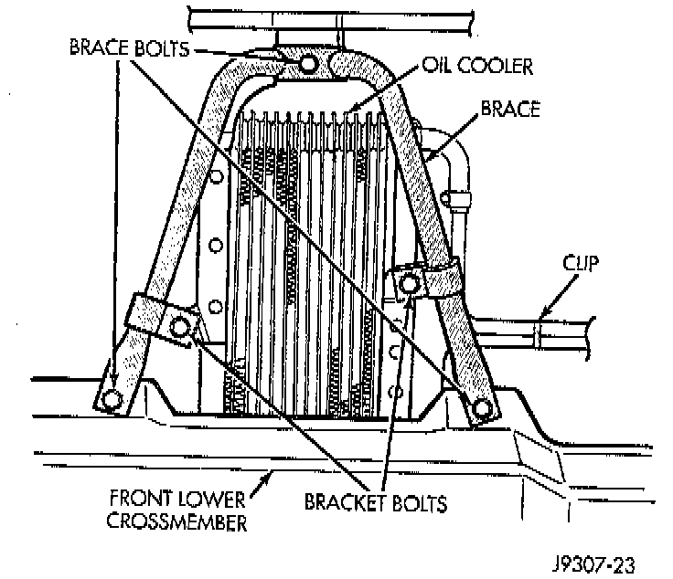
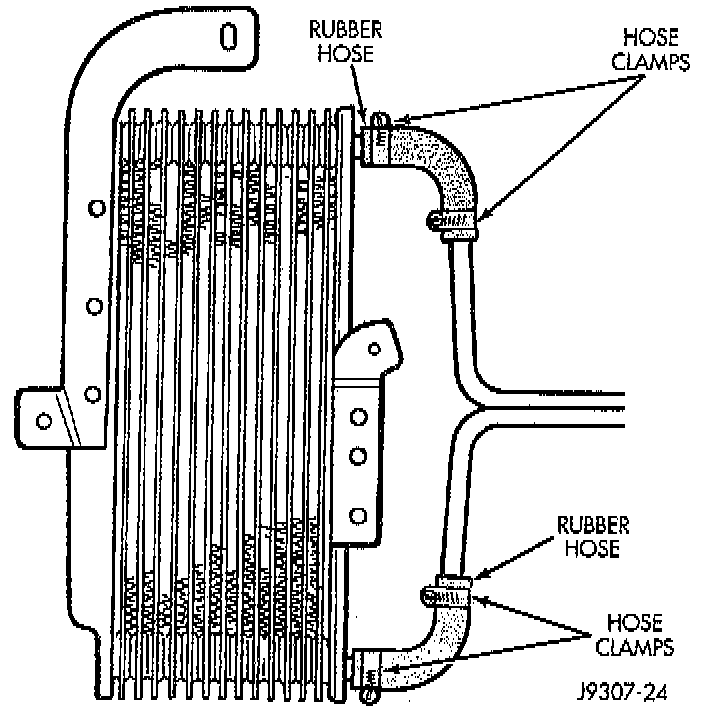

Removal and Replacement
REMOVAL1. Disconnect negative battery cable at battery.
2. Remove the grill.
3. Remove the bumper fascia.
4. Remove the grill opening reinforcement panel.

5. Remove two bracket bolts and three brace bolts.
6. Remove the retaining clip from the cooler lines.
7. Place a drain pan under the cooler.

8. Disconnect the upper hose clamp at cooler line. Separate the line from the rubber hose.
9. Position the cooler to gain access to lower hose. The cooler lines are routed through a rubber seal located on the side of radiator. Be careful not to cut or tear this seal when positioning cooler for lower hose removal.
10. Remove lower hose clamp and hose from cooler.
11. Remove cooler from vehicle.
INSTALLATION
1. Position cooler to vehicle.
2. Install lower hose and hose clamp to cooler. Hose clamp screws must be facing towards rear of vehicle. Tighten clamp to 2 Nm (18 inch lbs.) torque.
3. Install upper hose and hose clamp at cooler. Hose clamp screws must be facing towards rear of vehicle. Tighten clamp to 2 Nm (18 inch lbs.) torque.
4. Install brace and mounting bracket bolts.
5. Connect negative battery cable to battery.
6. Add necessary transmission fluid. Start engine and check for leaks.
7. Install grill opening reinforcement panel, bumper fascia and grill.